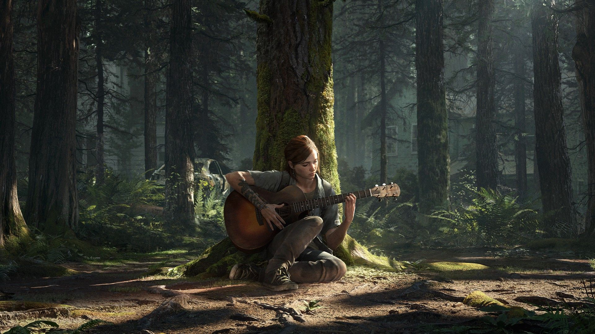

Tipos de música e sons que auxiliam no estudo e trabalho
Música Clássica
Especialmente a barroca (Bach, Vivaldi) e minimalista, que estimulam o raciocínio lógico e a concentração através de estruturas previsíveis.
Lo-Fi Hip Hop e Chillout

Batidas constantes entre 70-90 BPM, sem variações bruscas, ideais para sessões longas de revisão e memorização.
Jazz Instrumental
Gêneros como Cool Jazz ou Smooth Jazz oferecem um fundo sofisticado que desenvolve a criatividade sem distrair.
Sons da Natureza e Ruído Branco
Barulhos de chuva, mar ou ruído branco/marrom mascaram distrações externas e reduzem o estresse.
Trilhas Sonoras (Jogos/Cinema)

Músicas instrumentais projetadas para manter o foco em tarefas, desde que evitem picos emocionais intensos.